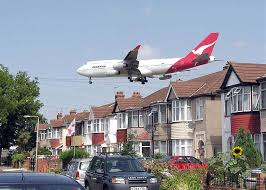
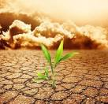
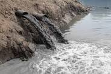

POLLUTION

Pollution or environmental pollution is the contamination of air, water,
soil, or land by solid, liquid, or gaseous substances or any forms of
energy like heat, sound, and radioactivity. It has adverse or harmful
effects on human beings, animals, or plants in our environment. The
substances which are responsible for water pollution, air pollution, and
land or soil pollution of our environment are called pollutants. Pollution
is the introduction of harmful materials into the environment. These
harmful materials are called pollutants. Pollutants can be natural, such
as volcanic ash. They can also be created by human activity, such as trash
or runoff produced by factories.
Air Pollution
Air pollution is contamination of the indoor or outdoor environment by any chemical, physical or biological agent that modifies the natural characteristics of the atmosphere. Household combustion devices, motor vehicles, industrial facilities and forest fires are common sources of air pollution.

Noise Pollution
Noise pollution is an invisible danger. It cannot be seen, but it is present nonetheless, both on land and under the sea. Noise pollution is considered to be any unwanted or disturbing sound that affects the health and well-being of humans and other organisms. Sound is measured in decibels.

Soil Pollution
Soil pollution refers to the contamination of soil with anomalous concentrations of toxic substances. It is a serious environmental concern since it harbours many health hazards. Soil pollution or land contamination is a problem with serious consequences. We tell you the causes, their effects and how we can reduce it.
Plastic Pollution
Air pollution is contamination of the indoor or outdoor environment by any chemical, physical or biological agent that modifies the natural characteristics of the atmosphere. Household combustion devices, motor vehicles, industrial facilities and forest fires are common sources of air pollution.

Water Pollution
Noise pollution is an invisible danger. It cannot be seen, but it is present nonetheless, both on land and under the sea. Noise pollution is considered to be any unwanted or disturbing sound that affects the health and well-being of humans and other organisms. Sound is measured in decibels.
Thermal Pollution
Soil pollution refers to the contamination of soil with anomalous concentrations of toxic substances. It is a serious environmental concern since it harbours many health hazards. Soil pollution or land contamination is a problem with serious consequences. We tell you the causes, their effects and how we can reduce it.